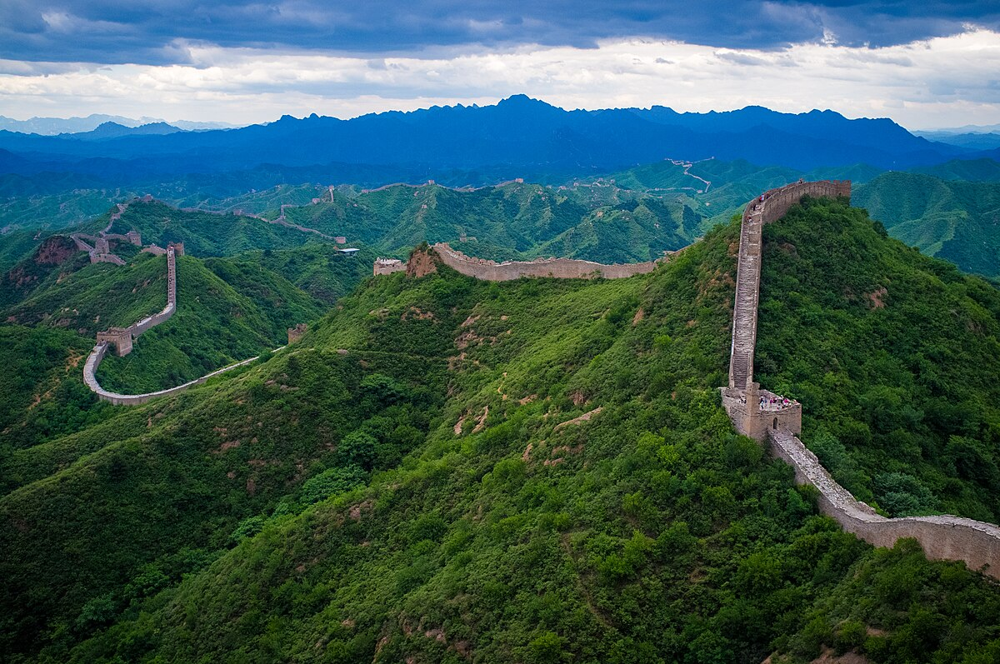
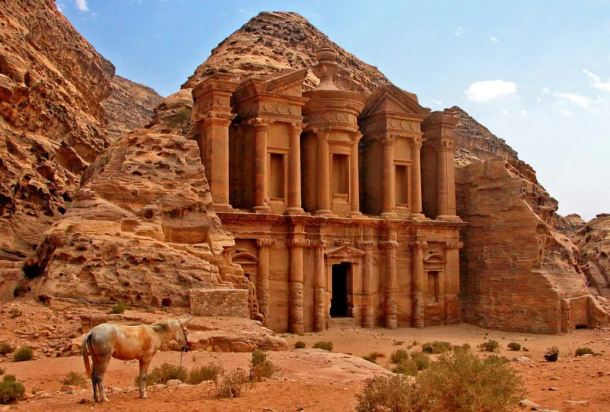
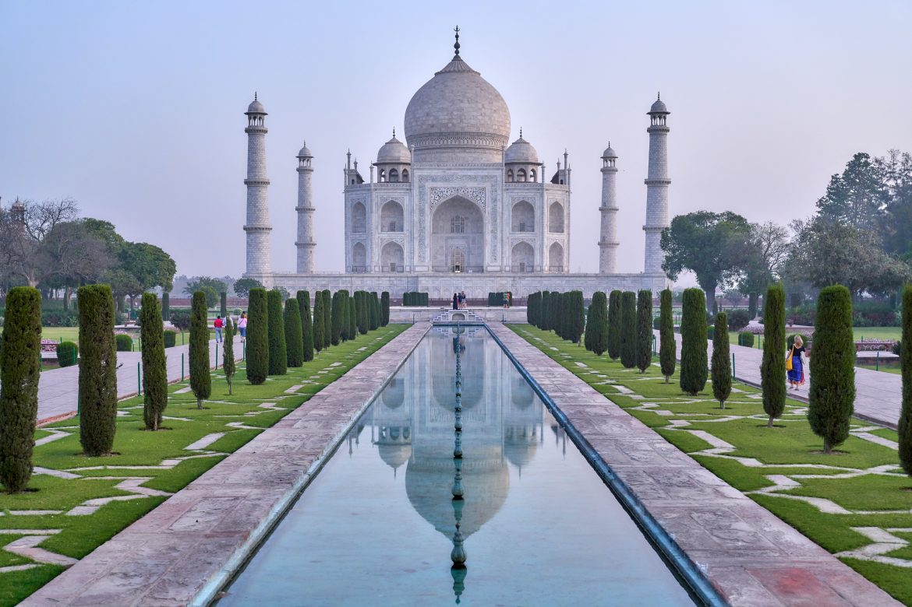

Wielki Mur Chiński
Historia
Wielki Mur Chiński, znany jako "Wanli Changcheng" (Mur Tysiąca Mil), to monumentalna budowla wznoszona przez wieki, aby chronić północne granice Chin przed najazdami. Pierwsze fragmenty muru powstały już w III wieku p.n.e. za czasów dynastii Qin, choć większa część muru pochodzi z czasów dynastii Ming (XIV-XVII wiek). Budowa była wykonywana głównie z lokalnych materiałów: kamienia, cegły, ubitej ziemi i drewna.
Funkcje i znaczenie
Mur pełnił wiele funkcji. Jego głównym celem była obrona przed nomadycznymi plemionami z północy, takimi jak Xiongnu czy Mongołowie. Dodatkowo służył jako szlak komunikacyjny dla żołnierzy i posłańców oraz jako punkt kontroli handlu i migracji. Wieże strażnicze rozmieszczone wzdłuż muru umożliwiały szybkie przekazywanie sygnałów dymnych i ogniowych w razie zagrożenia.
Architektura i rozmiar
Wielki Mur Chiński to nie jednorodna struktura, ale sieć murów i fortec ciągnących się na długości ponad 21 tysięcy kilometrów. Wysokość muru wynosi średnio 6-7 metrów, a szerokość u podstawy dochodzi do 6 metrów. Wzdłuż muru znajdują się wieże strażnicze, bastiony i schronienia dla żołnierzy.
Współczesne znaczenie
Obecnie Wielki Mur Chiński jest jednym z najbardziej rozpoznawalnych symboli Chin i wpisany jest na listę światowego dziedzictwa UNESCO. Jest celem milionów turystów z całego świata. Mimo jego historycznego znaczenia, niektóre odcinki są w złym stanie ze względu na naturalne procesy erozji i działalność człowieka.
Mit o widoczności z kosmosu
Często mówi się, że Wielki Mur Chiński jest jedyną budowlą widoczną z kosmosu gołym okiem. W rzeczywistości nie jest to prawda – jego wąski i mało kontrastowy profil sprawia, że trudno go dostrzec nawet z niskiej orbity okołoziemskiej. Mimo to, pozostaje on symbolem ludzkiej determinacji i inżynierskiego geniuszu.
Wielki Mur Chiński z lotu ptaka
Powrót na początek strony
Petra
Wstęp
Petra, znana jako "Różowe Miasto", to starożytne miasto wykute w skałach, położone w Jordanii. Jest to jedna z najważniejszych atrakcji turystycznych na świecie i znajduje się na liście 7 Nowych Cudów Świata. Historia Petry sięga co najmniej VI wieku p.n.e., kiedy to była zamieszkiwana przez Nabatejczyków, lud koczowniczy, który przekształcił ją w potężne królestwo dzięki strategicznemu położeniu na szlakach handlowych między Indiami a Egiptem oraz Arabią a Syrią.
Architektura i znaczenie
Petra jest znana z niezwykłej architektury, która łączy wpływy orientalne i hellenistyczne. Wiele budowli, takich jak słynny Skarbiec (Al-Khazneh), zostało wykutych bezpośrednio w różowej skale. Miasto posiadało zaawansowaną infrastrukturę, w tym sieć wodociągów i amfiteatr, co czyniło je jednym z najważniejszych ośrodków miejskich w regionie.
Upadek i zapomnienie
Po podboju rzymskim w 106 roku n.e. Petra straciła swoje znaczenie jako stolica królestwa, stając się częścią rzymskiej prowincji Arabii. Mimo pewnego renesansu pod rządami Rzymian, zmiany w szlakach handlowych oraz trzęsienia ziemi doprowadziły do jej stopniowego upadku. Miasto popadło w zapomnienie na kilka wieków, a jego pozostałości były strzeżone przez Beduinów.
Odkrycie na nowo
Petra została ponownie odkryta przez zachodnich podróżników w XIX wieku, co przyczyniło się do jej renomy jako jednego z najważniejszych miejsc archeologicznych i turystycznych na świecie. Dziś przyciąga miliony turystów rocznie, oferując nie tylko niezwykłe widoki, ale także bogatą historię i kulturę.
Lokalizacja Petry na mapie
Powrót na początek strony
Tadż Mahal
Wstęp
Tadż Mahal, położony w Agra, to monumentalne mauzoleum z białego marmuru, zbudowane w latach 1632-1653 na zlecenie cesarza Mogołów, Shah Jahana, dla upamiętnienia jego ukochanej żony, Mumtaz Mahal. Jest to symbol miłości i jeden z najwspanialszych przykładów architektury indo-islamskiej. Budowla zachwyca nie tylko swoim wyglądem, ale także historią, która kryje się za jej powstaniem.
Architektura i styl
Tadż Mahal jest znany z perfekcyjnej symetrii oraz zastosowania białego marmuru, który zmienia odcienie w zależności od pory dnia. Jego centralnym punktem jest majestatyczna kopuła otoczona czterema minaretami, które pełnią funkcję dekoracyjną. Cały kompleks zajmuje powierzchnię 17 hektarów i obejmuje nie tylko mauzoleum, ale także meczet oraz dom gościnny.
Dekoracje i zdobienia
Budowla zdobiona jest misternymi inkrustacjami z kamieni szlachetnych oraz motywami roślinnymi, które przybyły do Indii z Persji. Wnętrze mauzoleum zawiera proste sarkofagi Mumtaz Mahal i Shah Jahana, umieszczone w eleganckiej komnacie14. Zastosowanie różnorodnych materiałów i kolorów podkreśla bogactwo kulturowe Indii oraz ich tradycje artystyczne.
Znaczenie kulturowe
Tadż Mahal został wpisany na listę światowego dziedzictwa UNESCO w 1983 roku jako "klejnot sztuki muzułmańskiej w Indiach". Przyciąga rocznie miliony turystów, co czyni go jednym z najpopularniejszych miejsc na świecie. Jest także symbolem romantyzmu i wielkiej miłości, co przyczynia się do jego legendy.
Powrót na początek strony